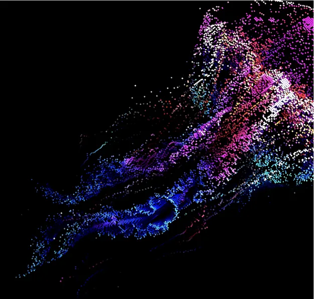
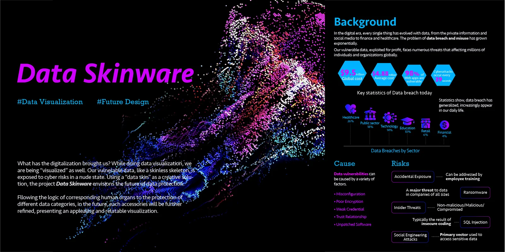
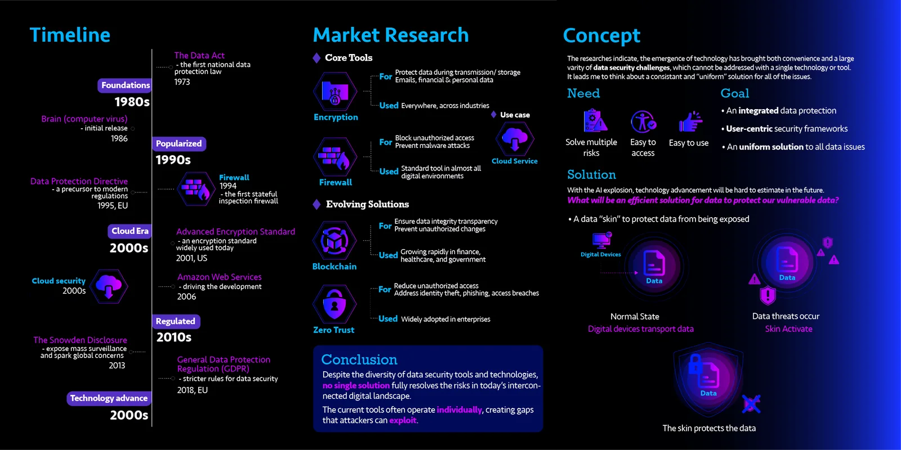
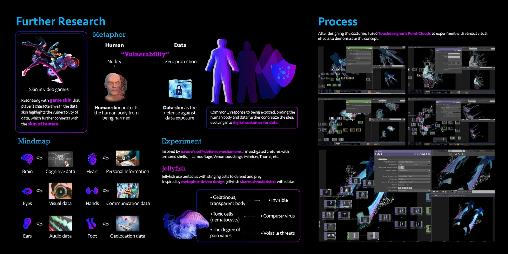
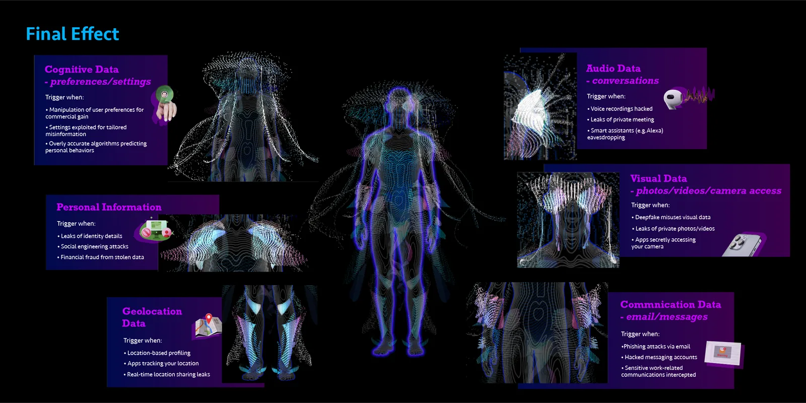

№ 04
—
Data Visualization
—
2024
Data Skinware
A creative exploration of data protection through visualization.
Data Skinware examines how our vulnerable data can be conceptually protected, using visualization to explore the relationship between digital identity and physical embodiment.

Research
The research explored how digital data vulnerability can be understood through visual metaphors, examining the concept of data as a form of protective layer.



Outcome
A series of visualizations that examine how our vulnerable data can be conceptually protected, creating a space where viewers can explore their relationship with digital vulnerability.
